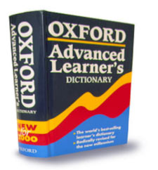

| Oxford
Dictionary's Latest Definitions
Contributed
by: Celina V. Rivera
Please update your online dictionary!
Atom
Bomb: An invention to end all inventions.
Boss:
Someone who is early when you are late and late when you are
early.
Cigarette:
A pinch of tobacco rolled in paper with fire at one end and
a fool on the other.
Classic:
A book which people praise, but do not read.
Committee:
Individuals who can do nothing individually and sit to decide
that nothing can be done together.
Compromise:
The art of dividing a cake in such a way that everybody believes
he got the biggest piece.
Conference:
The confusion of one man multiplied by the number present.
Conference
Room: A place where everybody talks, nobody listens
and everybody disagrees later on.
Criminal:
A guy no different from the rest... except that he got caught.
Dictionary:
A place where success comes before work.
Diplomat:
A person who tells you to go to hell in such a way that you
actually look forward to the trip.
Divorce:
Future tense of marriage.
Doctor:
A person who kills your ills by pills, and kills you with
his bills
Etc.
: A sign to make others believe that you know more
than you actually do.
Experience:
The name men give to their mistakes.
Father:
A banker provided by nature.
Lecture:
An art of transferring information from the notes of the Lecturer
to the notes of the students without passing through"the
minds of either"
Miser:
A person who lives poor so that he can die rich.
Office:
A place where you can relax after your strenuous home life.
Opportunist:
A person who starts taking bath if he accidentally falls into
a river.
Optimist:
A person who while falling from Eiffel tower says in midway
"See I am not injured yet."
Philosopher:
A fool who torments himself during life, to be spoken of when
dead.
Politician:
One who shakes your hand before elections and your confidence
after.
Smile:
A curve that can set a lot of things straight.
Tears:
The hydraulic force by which masculine will-power is defeated
by feminine water power...
Yawn:
The only time some married men ever get to open their mouth.
|